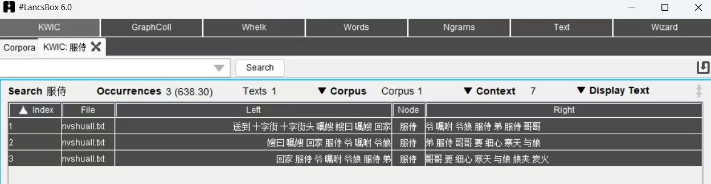

照片资料 · 原图与文字整理
《金陀女》· “服侍”语料分析
LancsBox 关键词语境截图：“服侍”命中3次，涉及1篇文本；附统计读法与原图。


文字整理仅覆盖可辨识内容，局部细节请以原图为准。
文字整理与阅读说明
材料说明
按用户说明，分析对象为歌曲《金陀女》，使用的工具称为 LancsBox X。原截图标题栏显示“#LancsBox 6.0”；这里分别保留用户说明和截图信息，不据此认定两者的版本相同。截图本身没有显示歌名。
截图数据
当前位于 KWIC（关键词语境）页，检索词为“服侍”。Occurrences 显示3次，Texts 显示1篇文本，三行命中的 File 栏均为 nvshuall.txt。语料库名称显示 Corpus 1，Context 设置显示7。
怎样读语境
每行分为 Left（左侧语境）、Node（检索词）、Right（右侧语境）。三行中央都是“服侍”，周围可见爷、娘、弟、哥哥等称谓，以及“要 细心”“寒天 与娘”等片段。可结合原图观察这些词在句中的位置；它们不是本页重新运行分析得到的结果。
数字口径
Occurrences 后的括号值为638.30。截图没有交代该数的单位、归一化基数与分词设置，故只保留原值，不写成百分比，也不反推总词数。3次命中表示检索词出现次数，不代表3首歌；1篇文本也不能用来推断语料库只有一首歌。
阅读范围
本条呈现《金陀女》相关语料分析截图及其读法。未取得原始语料与分析设置，不补写完整歌词、词频排名、搭配强度或统计结论；局部语境请放大原图核对。
| 左侧语境 | 检索词 | 右侧语境 |
|---|---|---|
| …回家 | 服侍 | …服侍 弟 服侍 哥哥 |
| …爷娘 | 服侍 | 弟 服侍 哥哥 要 细心… |
| …服侍 弟 | 服侍 | 哥哥 要 细心 寒天 与娘… |